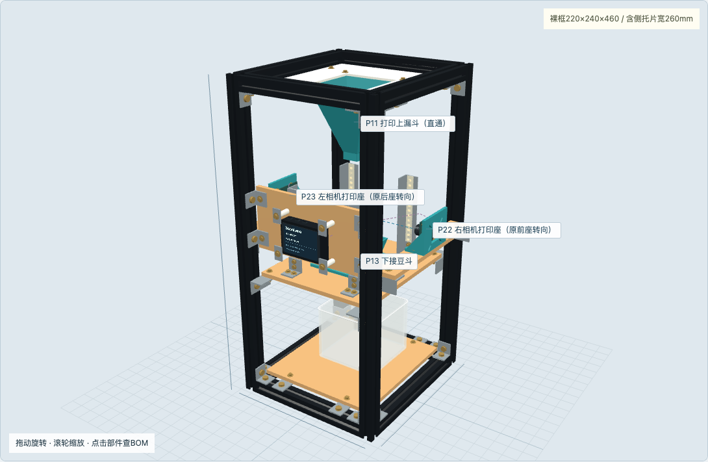
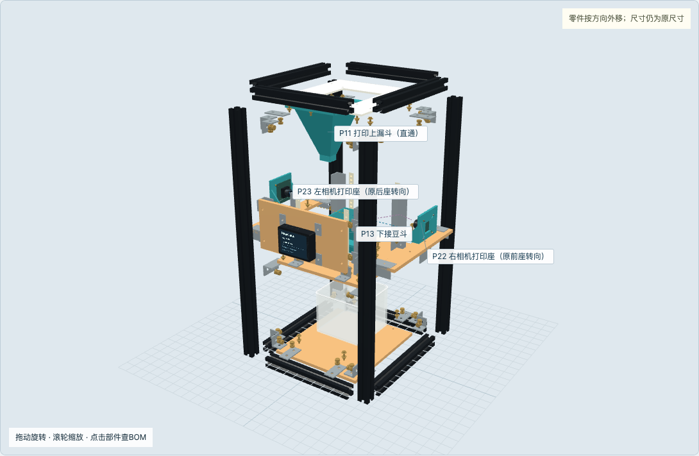
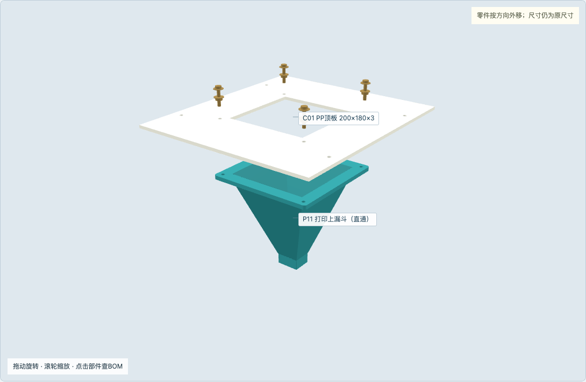
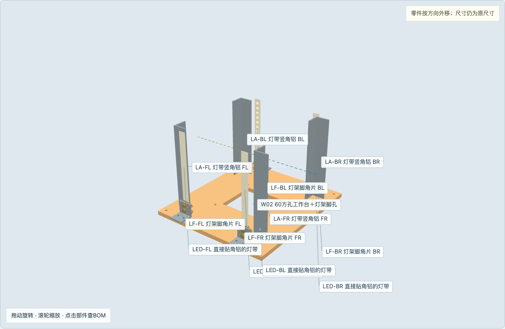
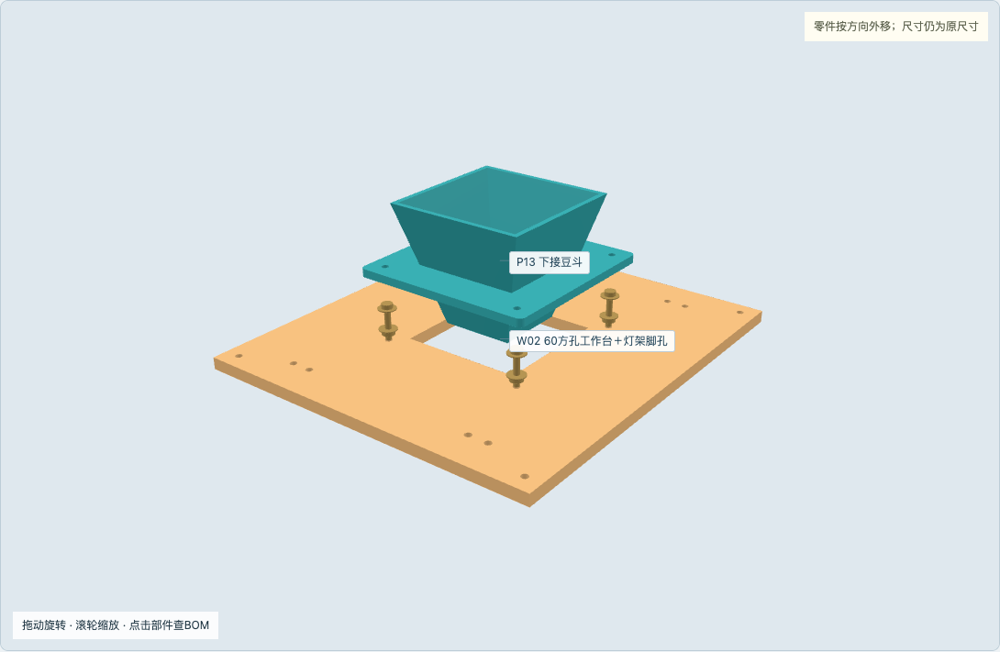
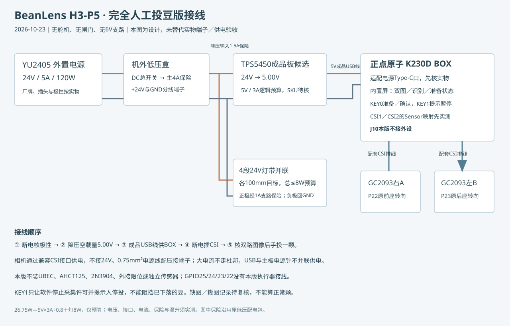

相机改到BOX左右，灯带直接上20角铝；完全人工逐颗投豆。

用户已确认两镜头相距约200mm、BOX位于两者之间、左右水平相向。BOX中心约Z260，以缩短排线路径。
打印、木板、角铝和型材始终保持同一尺寸比例。

180沿左右X，200沿前后Y；法兰在PP板下方。

原P22／P23打印座转90°使用；两光轴保持同高。
四只长120竖角铝由四脚连接工作木台；不再使用铝槽和卡扣。

原下斗、底板可复用；工作台新增灯架脚孔。

原承板和相对孔位不改，仅将承板沿立柱降低110mm。
相机只由配套CSI供电；BOX只接已核5V电源；J10本版不接外设。

新BOM51行；原料、加工子件、复用件分别列出，不重复采购。